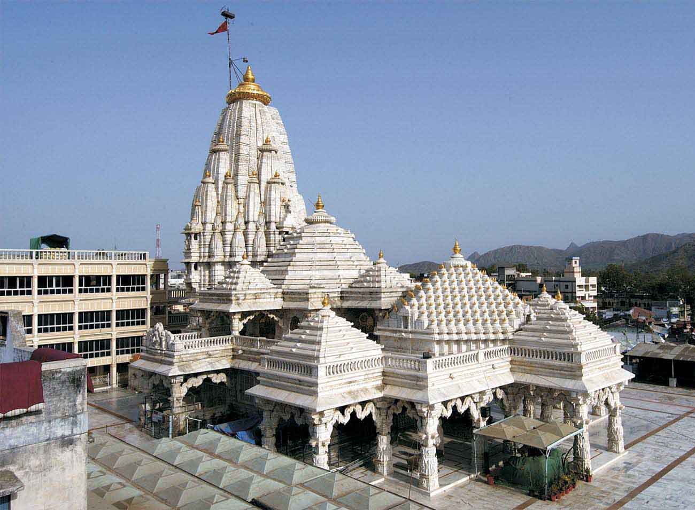

Ambaji, Holy Mother Goddess, teaches us that the journey of life is to cultivate the heart of a mother. To strengthen our inner awareness, and our faith in Love, pure and unfettered.

Join the 30 lakh pilgrims from a variety of religions and backgrounds who come here every year from far away to bow their heads before this goddess. Experience her, worship her, she who has been worshiped on this land since pre-Vedic times. She who has been praised by saints and sages of India throughout history. She who is considered the culmination of all the powers of all the gods put together, the original power of the universe, a radiance with no birth and no death. She who lives here in the Arasur hills (and so is also known as Arasuri Amba), near the source of the river Saraswati at the south-western end of the Aravali mountain range. Come, give yourself to her in these hills, and learn of love from the Mother of mothers.
Being one of the oldest and most revered temples of ancient India, there are many enthralling legends and myths attached to this temple. Each story intensifies the brilliance of the goddess and the faith of a devotee. Here are a few notable legends:
1) Shakti Peethas:
Sati (also know as Uma) married Lord Shiva against the wishes of her father, King Daksha Prajapati. In revenge, Daksha organized a huge yagna and invited all the gods and deities except his new son-in-law. Sati decided to attend the yagna despite Lord Shiva's attempt to persuade her not to. The King ignored his daughter's presence and publically abused Lord Shiva. Unable to bear her father’s insults, Sati committed suicide by jumping into the yagna fire. Upon learning about this, Lord Shiva erupted into a tandava, a furious and wild dance of destruction, annihilating everything at the yagna site. Overcome with grief, he carried Sati’s burning body and flew across the skies. The gods appealed to Lord Vishnu to calm Lord Shiva. With his sudarshan chakra, Lord Vishnu severed Sati’s body into 51 pieces to bring Lord Shiva back to sanity. The places where the various parts of Sati’s body fell are known as shakti peethas. Her heart is believed to have fallen on Arasur hill where the Gabbar Temple of Ambaji is today.
2) Mahishasur-mardini (the destroyer of Mahishasur):
The demon Mahishasur, after being given a boon by the fire god Agni that he wouldn't be killed by weapons bearing masculine names, caused grave destruction and terror. The gods sought the help of Lord Shiva, who advised the invocation of the goddess Shakti. With the gods' prayer, a divine luster sprang from the heart of Shiva and the bodies of all the gods and formed the goddess Adya Shakti. The gods gave her ornaments, arms and a lion as a vehicle. She fought with the evil Mahishasur for nine long days and nights, eventually killing him. After the battle she chose the Ambaji Gabbar, the shakti peetha, for her permanent residence. Shakradaya Stuti, the gods' prayer of thanks, is an important part of Saptashati,700 verses praising the deeds of the goddess Ambaji, recited with reverence at the Ambaji Fair.
3) Ramayana:
Lord Rama and Laxman came to the hermitage of the sage Shringi in the south of the forest of Mount Arbud or Abu, in search of Sita after Ravana abducted her. Shringi advised them to worship goddess Amba at Gabbar. The goddess presented them an arrow, called Ajaya, with which Lord Rama finally killed Ravana.
4) Mahabharata:
In dwapar yuga, Nandrai and his wife Yashoda visited Gabbar for Lord Krishna's tonsorial ceremony (ritual head-shaving). Rukmini, the daughter of King Bhishmak of Vidarbha, worshipped goddess Ambaji here to make Lord Krishna her husband. The Pandavas worshipped goddess Ambaji during their exile. She gave Bhimsen a garland called ajaymala which would ensure victory in battles. She gave Arjun divine costumes for disguise as Brihannal in their last year of exile while hiding at the court of Virata.
How to get there: